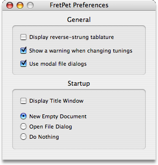

Open the Preferences dialog by selecting from the application menu. The preferences dialog appears as shown above with the following options:
General Preferences
- Display reverse-strung tablature
- Normally your sequences will appear with the low string at the bottom. If you reverse the strings on the guitar the low string normally continues to appear at the bottom. To allow the low string to be displayed at the top, enable this option.
- Show a warning when changing tunings
- When you change the guitar tuning FretPet will warn you that you are about to recalculate all your chord fingerings. If you don't want to see this warning then disable this option.
- Use modal file dialogs
- On smaller screens the palettes get in the way of any sheet dialogs attached to the document window. To use modal dialogs (which appear in front of all other windows) enable this option.
- Display Title Window
- By default FretPet likes to display its title window during startup. When you no longer wish to see the title window enable this option.
- New Empty Document
- Select this option if you want a new empty document to be automatically created each time you run the program.
- Open File Dialog
- Select this option if you want a file dialog to appear automatically each time you start FretPet.
- Do Nothing
- Select this option if you want neither an empty document nor an open dialog to appear when you start FretPet.